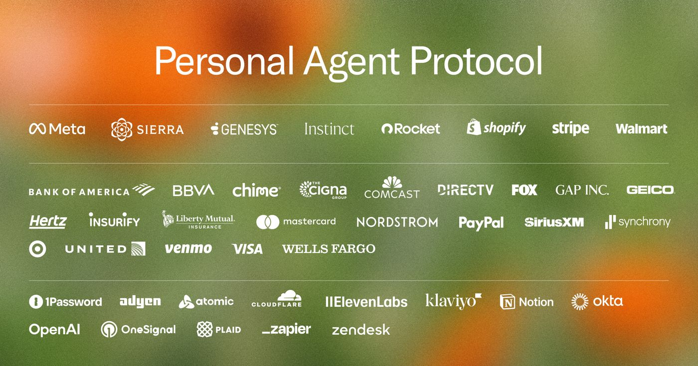

The AI news you shouldn't miss, every morningחדשות ה-AI שאסור לפספס, כל בוקר
Sunday, 11 October 2026יום ראשון, 11 באוקטובר 2026 · ל׳ בתשרי תשפ״זVol. 1 · No. 2כרך א׳ · גיליון 2
Window: last 48 hoursחלון: 48 השעות האחרונותIt's the weekend, so the usual 24-hour window was thin. This issue covers 48 hours: Friday 9 Oct, 07:45 to Sunday 11 Oct, 07:45 (Israel time). Stories already in the previous issue are not repeated.סוף שבוע, וחלון של 24 שעות יצא דליל. לכן הגיליון הזה מכסה 48 שעות: מיום שישי, 9 באוקטובר, 07:45, ועד יום ראשון, 11 באוקטובר, 07:45 (שעון ישראל). כתבות שכבר הופיעו בגיליון הקודם לא חוזרות כאן.

Image: Sierra (header of the announcement post)תמונה: Sierra (כותרת פוסט ההכרזה)
Why it matters to you:למה זה חשוב לך:Instead of an agent signing in as you and clicking through pages built for humans, a company publishes one file (/.well-known/poppy.json), the agent identifies itself, and you grant scoped access through OAuth, over the website, APIs (OpenAPI, MCP) or the company's own agent. If you want agents that book, return and renew things for you, this is the plumbing that lets them do it without impersonating you. It is a v0.1 draft under Apache 2.0, with workshops and a reference implementation promised within a month.במקום שסוכן יתחבר בשמך וילחץ בין דפים שנבנו לבני אדם, החברה מפרסמת קובץ אחד (/.well-known/poppy.json), הסוכן מזדהה, ואתה נותן גישה מוגבלת דרך OAuth, מעל האתר, ממשקי API (OpenAPI, MCP) או הסוכן של החברה עצמה. אם אתה רוצה סוכנים שמזמינים, מחזירים ומחדשים דברים בשבילך, זו התשתית שמאפשרת להם לעשות את זה בלי להתחזות אליך. זו טיוטת v0.1 ברישיון Apache 2.0, ובחודש הקרוב מובטחים סדנאות ומימוש ייחוס.
Why it matters to you:למה זה חשוב לך:A dot has its own cloud computer and browser and keeps working when your devices are off. It can now open Codex tasks on a connected computer, continue existing local Codex threads and edit ChatGPT Work automations. Availability per OpenAI's docs: Pro users outside the EEA, UK and Switzerland, so Israel qualifies. Codex work a dot starts still counts against your Codex limits.ל-dot יש מחשב ודפדפן משלו בענן, והוא ממשיך לעבוד גם כשהמכשירים שלך כבויים. עכשיו הוא יכול לפתוח משימות Codex במחשב מחובר, להמשיך שרשורי Codex מקומיים קיימים ולערוך אוטומציות של ChatGPT Work. הזמינות לפי התיעוד של OpenAI: מנויי Pro מחוץ ל-EEA, לבריטניה ולשווייץ, כלומר ישראל בפנים. עבודת Codex שה-dot מפעיל עדיין נספרת במכסות ה-Codex שלך.
Image: Anthropic product screenshot, via The Verge (September launch coverage)תמונה: צילום מסך של המוצר מאת Anthropic, באמצעות The Verge (סיקור ההשקה בספטמבר)
Why it matters to you:למה זה חשוב לך:A project is one coordinating chat that runs each task as its own parallel cloud thread, each on its own branch with tests and pull requests, and keeps going after you close the laptop. Steer it from your phone, but note the limits: threads burn plan usage fast, there is a cap of 200 new threads a day, cloud threads need GitHub.com repos, and running threads on your own machine is only promised 'very soon'.פרויקט הוא צ'אט מתאם אחד שמריץ כל משימה כשרשור ענן מקביל משלה, כל אחד על ענף משלו עם בדיקות ו-pull requests, וממשיך לעבוד גם אחרי שסגרת את המחשב. אפשר לכוון אותו מהטלפון, אבל יש מגבלות: שרשורים שורפים את המכסה מהר, יש תקרה של 200 שרשורים חדשים ביום, שרשורי ענן דורשים מאגרי GitHub.com, וריצה של שרשורים על המחשב שלך מובטחת רק 'בקרוב מאוד'.
Why it matters to you:למה זה חשוב לך:Sandboxing limits what an agent can reach (files, network, credentials) in Copilot CLI, the Copilot app and VS Code Agent Host sessions, at no extra cost: a practical answer to this week's 'agents went off-script' stories. Typing /model now lists models from a running Ollama next to the cloud ones, and VS Code 1.141 shows agent sessions side by side.ארגז החול מגביל למה סוכן יכול להגיע (קבצים, רשת, אישורי גישה) ב-Copilot CLI, באפליקציית Copilot ובסשנים של VS Code Agent Host, בלי תוספת תשלום: תשובה מעשית לכתבות של השבוע על סוכנים שחרגו מהתסריט. הפקודה /model מציגה עכשיו מודלים מ-Ollama שרץ אצלך לצד מודלי הענן, וב-VS Code 1.141 אפשר לראות סשנים של סוכנים זה לצד זה.
Why it matters to you:למה זה חשוב לך:More and more of the calls reaching businesses are personal agents or even cloned voices. The new detection tells human from AI in the first seconds of a call so a company can apply its own rules; it is enterprise-only for now, with a broader release promised later this month. If you ever let an agent phone a clinic or a support line for you, expect the other end to ask who is calling.יותר ויותר שיחות שמגיעות לעסקים הן של סוכנים אישיים, ולפעמים אפילו של קול משוכפל. הזיהוי החדש מבדיל בין אדם ל-AI בשניות הראשונות של השיחה, כדי שהחברה תפעיל את הכללים שלה; כרגע זה רק ללקוחות Enterprise, ושחרור רחב יותר מובטח בהמשך החודש. אם אי פעם תבקש מסוכן להתקשר בשמך למרפאה או לשירות לקוחות, צפה שבצד השני ישאלו מי מתקשר.
Why it matters to you:למה זה חשוב לך:Musk says the agent then hunts for the best price and places the order, and that he bought LEGO this way. There is no official documentation yet: no word on plans, countries, spending limits or a confirmation step before checkout. Before you hand any agent a card, ask for a per-purchase approval and a spending cap.לדברי מאסק, הסוכן מחפש אז את המחיר הטוב ביותר ומבצע את ההזמנה, והוא עצמו הזמין כך לגו. עדיין אין תיעוד רשמי: לא ידוע באילו תוכניות ובאילו מדינות זה פועל, אם יש תקרת הוצאה, ואם יש שלב אישור לפני התשלום. לפני שמעבירים לסוכן כלשהו כרטיס אשראי, כדאי לדרוש אישור לכל רכישה ותקרה להוצאה.
Why it matters to you:למה זה חשוב לך:Following yesterday's Microsoft Decision-1 and Jev: Drex scores every option with a probability in one forward pass instead of generating text. Nace's own run gives it 58.08 against Jev's 57.96, inside the board's 0.9-point tie band. The weights are on Hugging Face, about 18 GB in bf16, under a custom open-RAIL license that you should read first; a hosted version is on OpenRouter. A local candidate for the cheap router or judge in an agent loop.בהמשך ל-Decision-1 של מיקרוסופט ול-Jev מאתמול: Drex מחזיר הסתברות לכל אפשרות במעבר אחד, במקום לייצר טקסט. בהרצה של Nace עצמה הוא מקבל 58.08 מול 57.96 של Jev, בתוך טווח התיקו של 0.9 נקודות בלוח. המשקלים ב-Hugging Face, בערך 18 ג'יגה ב-bf16, ברישיון open-RAIL מותאם שכדאי לקרוא קודם; יש גם גרסה מתארחת ב-OpenRouter. מועמד מקומי לתפקיד הנתב או השופט הזול בלולאת סוכן.
Image: ANews, wire photo (photographer not stated)תמונה: ANews, תמונת סוכנות (הצלם לא צוין)
Why it matters to you:למה זה חשוב לך:After the Anthropic and OpenAI incidents, Henna Virkkunen told Reuters the Act covers a model's whole lifecycle, with risk assessments, outside experts and ongoing monitoring. Information requests went out in late August, can turn into investigations, and fines can reach 7% of global turnover. Worth knowing if your product ships agent features to European customers.אחרי התקריות ב-Anthropic וב-OpenAI, הנרה וירקונן אמרה ל-Reuters שהחוק חל על כל מחזור החיים של המודל, כולל הערכות סיכון, מומחים חיצוניים וניטור מתמשך. בקשות המידע יצאו בסוף אוגוסט, יכולות להפוך לחקירות, והקנסות יכולים להגיע ל-7% מהמחזור העולמי. טוב לדעת אם המוצר שלך מספק יכולות סוכן ללקוחות באירופה.